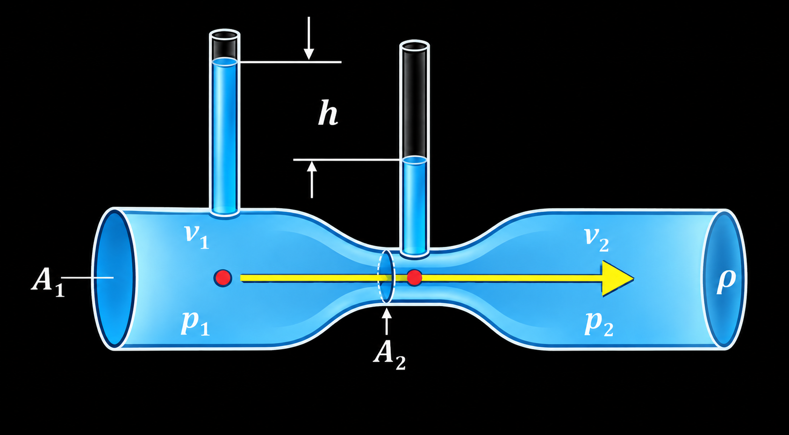
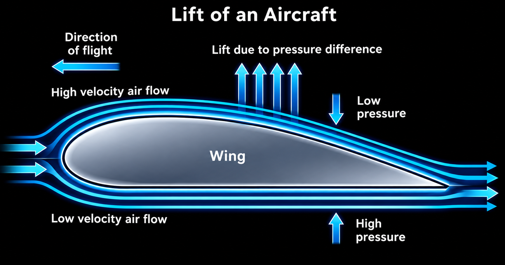
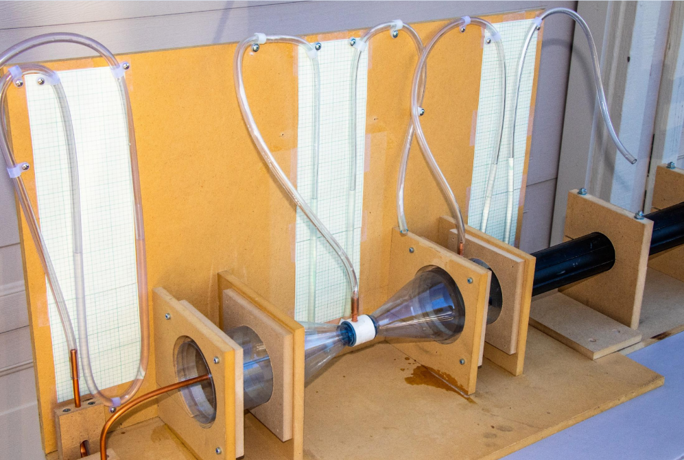
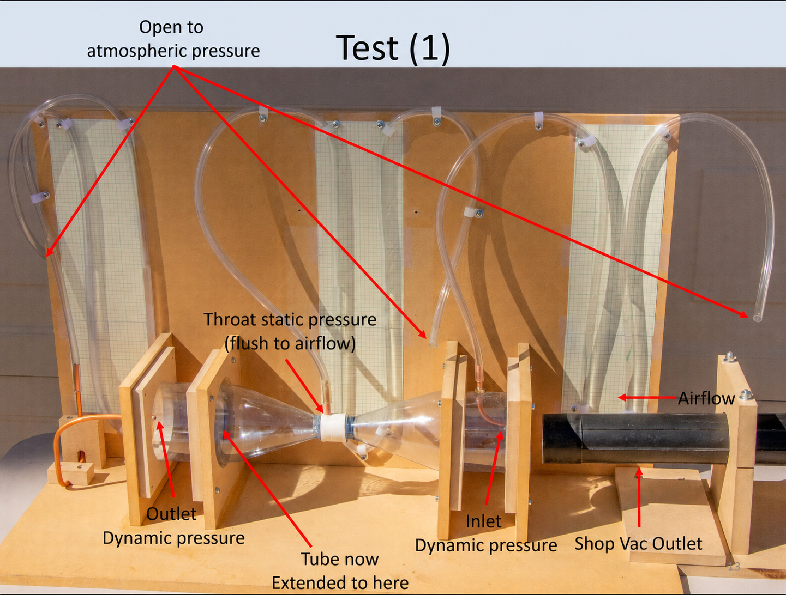
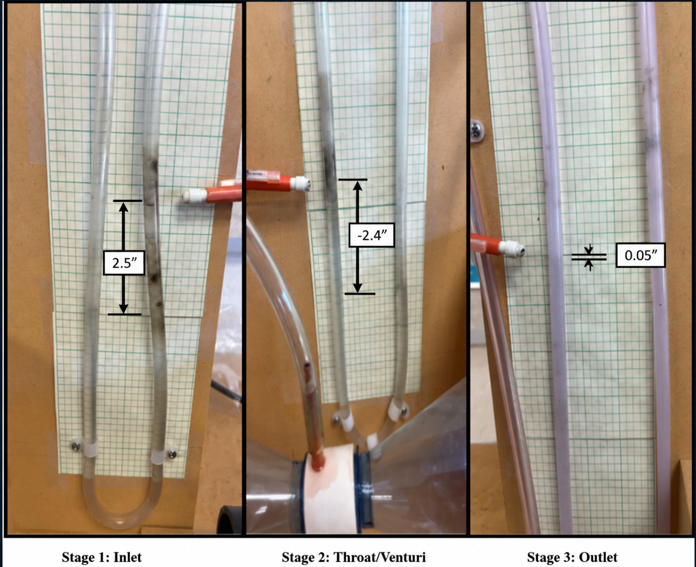

Overview
The purpose of this laboratory experiment is to demonstrate and verify Bernoulli's principle through practical measurement and calculation of airflow properties in a converging-diverging duct system, or venturi. This experiment investigates the relationship between fluid velocity and pressure in a variable cross-sectional area flow system using a shop vacuum as the main driving mechanism and water manometers for pressure measurement. The goal of this experiment is to understand how Bernoulli's principle applies to various elements of flight, including the production of lift.


Methodology
The experiment was designed to isolate and measure the core variables of Bernoulli's equation within a controlled converging-diverging duct. Each stage was measured independently, with manometer readings taken at steady-state airflow. Readings were converted from raw water-column heights (in inches H₂O) to pressure values in lb/ft², then fed into Bernoulli's equation to solve for velocity at each stage.
Set Up
Using a shop vacuum as the primary air-driving mechanism, the lab setup is simple yet effective. Air forced from the shop vac enters through an opening known as the inlet, an exposed region of ambient pressure. The air then travels into a narrow passage called a venturi, an enclosed chamber where, as Bernoulli's principle describes, air pressure drops as velocity rises. In this setup, the venturi is formed by joining the ends of two water bottles together. This venturi design is very similar to those found in a carburetor chamber. As the air exits the venturi, it expands outward into an open region called the outlet. To measure static pressure throughout the system, water manometers were tapped at each measuring point (inlet, venturi, outlet), as prescribed in the images below.
Setup with shop vac view

Setup with labels

Manometer Readings — Reading Air Pressure from Water Displacement

Steps
1Identify Assumptions and Constants
2Measure H₂O Pressure Differentials at Stages: Inlet, Throat/Venturi, Outlet
3Calculate Pressure (q) and Convert to PSF (lb/ft²)
4Solve for Respective Velocities (MPH)
5Find Total Pressures (Dynamic + Static)
6Compile Results and Validate Bernoulli’s Principle
Relevant Equations
Bernoulli's Equation
P1 + ½ρV1² = P2 + ½ρV2²
Explains overall relationship between Pressure and Velocity
Where P = static pressure (lb/ft²) | ρ = air density = 0.002375 lb·s²/ft⁴ (sea level, standard day) | V = velocity (ft/s)
Dynamic Pressure
q = ½ρV²
Quantifies the kinetic energy per unit volume of moving air (or fluid)
Where q = dynamic pressure (lb/ft²) | ρ = air density (lb·s²/ft⁴) | V = velocity (ft/s)
Results & Findings
Measurements confirmed the inverse relationship between static pressure and fluid velocity across all three stages. The venturi (narrowest point) recorded the highest velocity and the lowest static pressure, consistent with Bernoulli's equation.
As airflow is forced through the narrow venturi throat, velocity spikes dramatically — from 61.78 ft/s at the inlet to 147.1 ft/s at the throat — while pressure simultaneously drops to its lowest recorded value. This directly proves Bernoulli's principle: the faster the fluid moves, the lower its pressure.